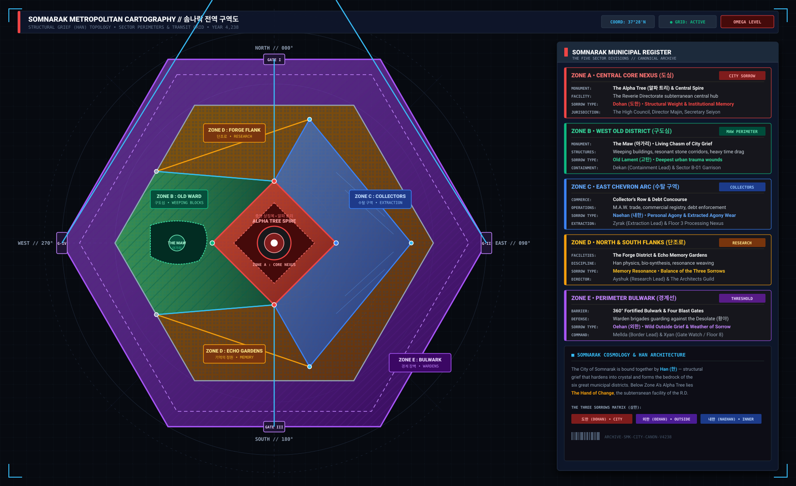

Somnarak City — Full Metropolitan Map

What this map is
This page is the city schematic — the same hex the atlas hub now draws as an icon. It is not a concentric-ring tourist map and it is not Facility 01. Zoom the master blueprint. The cuts are slices of that hex, not other cities glued on.
{kind=link}

Somnarak is a purple hex around a red diamond, not five concentric rings and not a 400 m titanium curtain. Zone A is six buildings on a plaza of polished Han around the Alpha Tree. The Hand of Change sits under those roots. Zone B is west Old Ward and the Maw. Zone C is Collectors' Row. Zone D is forge north and Echo Gardens south. Zone E is the ring and four gates.
ZONE A: CORE NEXUS
Red diamond · six buildings · Alpha Tree plaza. Citizens not on the stone.
EXPLORE ZONE A →ZONE B: OLD WARD
West green · the Past · Old Lament, Cheongula, the Maw.
EXPLORE ZONE B →ZONE C: COLLECTORS' ROW
East debt street · ledgers, not relic bazaars.
EXPLORE ZONE C →ZONE D: FORGE & GARDENS
North forge, south Echo Gardens, Hollow Glass tavern.
EXPLORE ZONE D →ZONE E: PERIMETER BULWARK
Purple hex · Gates I–IV · not a 400 m titanium curtain.
EXPLORE ZONE E →THE DESOLATE (황무지)
Past the hex · Tide · waste the ring exists against.
EXPLORE WASTELAND →How to read this map
Somnarak is a five-zone city around the Alpha Tree, not a pre-cataclysm bazaar grid. Zone A is the Core Nexus — Sigh Palace, Grand Archive, Crucible, Spire of Dreams, Abyssal Well, Architect’s Hall, plaza of polished Han. Zone B is the Past: Old Lament, first settlement, Cheongula ground, the Maw. Zone C is Collectors’ Row and the debt street, not “relic bazaars.” Zone D is forge, gardens, Furnace refugees, and the Hollow Glass. Zone E is the wall against the Desolate and the Wilderness Tide.
Time: first settlement year 0 in B; Cheongula 202; Occlusihan 202–223; Consolihan 234–245 and the Tree; structuring through 281; SED ~4200; Directorate 4202; present ~4238. Corner cities Cheonbulok and Mugeukji are not on this five-zone card set. Use the zone articles, not the card blurbs, as canon.